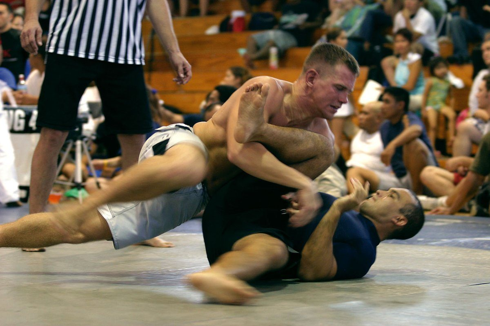
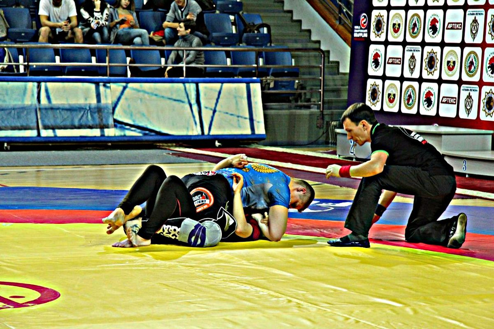
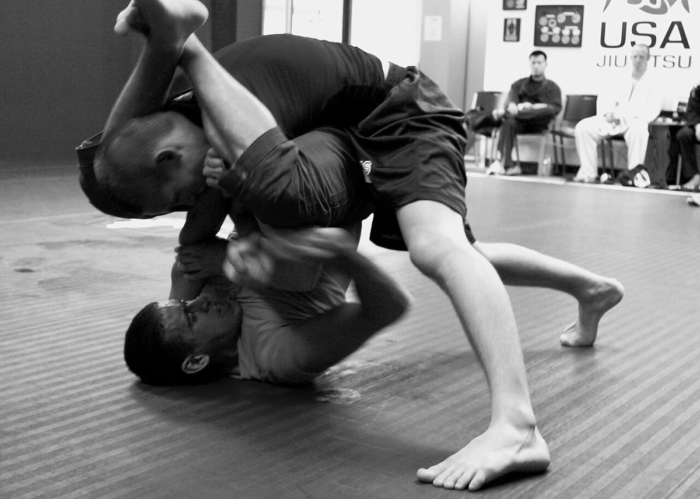
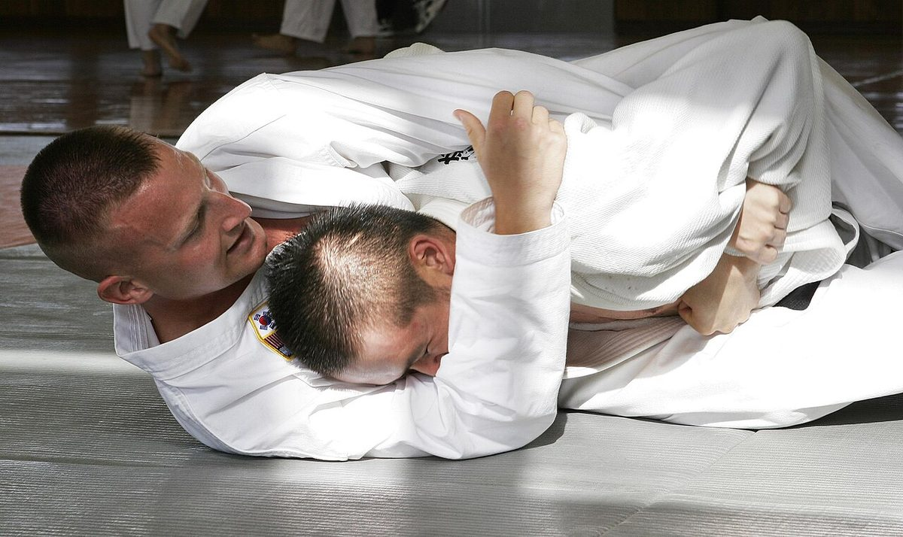
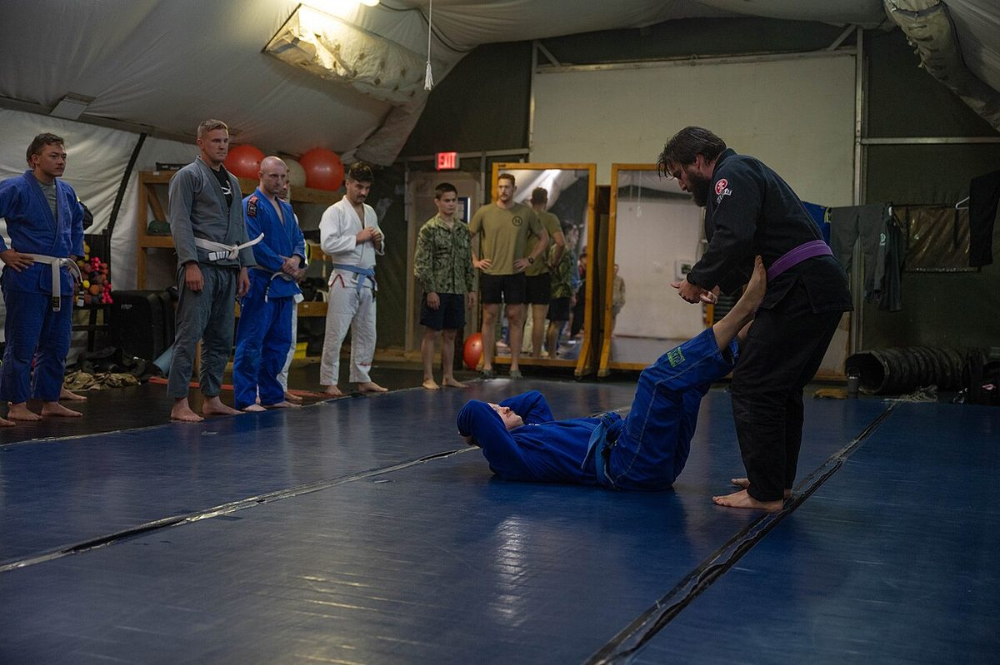
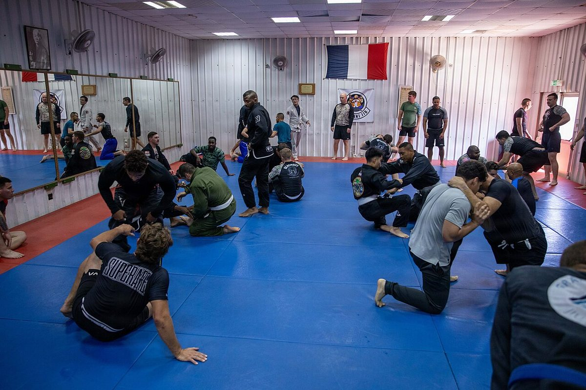

Fala, galera! Você já parou pra pensar que academia de jiu-jitsu é que nem churrasco de domingo? A carne importa, claro. Mas o que faz você voltar toda semana é a turma em volta da churrasqueira. Se a turma é boa, até carne de segunda fica gostosa. Se a turma é ruim, nem picanha salva.
E não é que a semana veio com esse tema? Teve campeão falando de fidelidade à academia, atleta da B Team falando de parceiro de treino perigoso e professor que mantém a escola aberta desde 1998 tirando gente tóxica do tatame. Teve também superluta com socos no corpo, a volta de um nome grande ao grappling e um campeão do UFC defendendo o kimono.
Como sempre, o Estagiário aqui separou o que importa e comentou do ponto de vista de quem treina por hobby, tem trabalho, família e dois ou três treinos na semana quando dá. Bora lá!
1. Galvão x Palhares, 15 anos depois, agora com socos no corpo

O que rolou: o ACBJJ, evento russo de jiu-jitsu, anunciou nesta semana que André Galvão e Rousimar Palhares fazem a luta principal do ACBJJ 23, na sexta-feira, 13 de novembro, na Farmasi Arena, no Rio de Janeiro. É a revanche da final do até 88 kg do ADCC de 2011, em Nottingham, na Inglaterra, que o Galvão venceu por 9 a 4. Dessa vez a luta é no limite de 100 kg e com regras de combat jiu-jitsu: segundo o promotor Davi Ramos, ex-lutador do UFC, socos e chutes no corpo são permitidos, golpes na cabeça continuam proibidos e os rounds são decididos no sistema 10-9, avaliando impacto, controle e agressividade. Antes da principal, Rodolfo Vieira enfrenta Kelvin Gastelum só no grappling, sem golpes. Fontes: BJJDoc e Sinistro News.
Cara, uma revanche de 15 anos. Lá em 2011 os dois estavam no auge. Hoje o Galvão tem 44 anos e voltou a competir na IBJJF faz poucas semanas. Isso por si só já mostra uma coisa que a gente esquece: o jiu-jitsu deixa você continuar no jogo por muito tempo, desde que você cuide do corpo pra isso. E o formato é diferente de tudo que a gente vê no dia a dia. Com soco no corpo valendo, ficar parado na guarda esperando o tempo passar deixa de ser opção.
Agora, um detalhe da história do Palhares que vale pra todo mundo, inclusive pra quem nunca vai pisar num evento desses. Segundo o BJJDoc, ele foi dispensado do UFC depois de episódios em que segurou a finalização mesmo com o árbitro mandando soltar. Não tô aqui pra julgar ninguém, mas o recado pro treino de terça à noite é claro: bateu, soltou. Na hora. Sem "só mais um pouquinho" pra provar que tava encaixado. Na prática: no próximo treino, preste atenção em quanto tempo você leva pra soltar depois que o parceiro bate. E se você treina com alguém que demora pra soltar, fale com o professor. Seu cotovelo agradece.
2. Garry Tonon volta ao grappling pra encarar justamente quem o venceu

O que rolou: depois de anos dedicado ao MMA, o americano Garry Tonon foi anunciado no Polaris 40, no sábado, 21 de novembro, no Southampton Central Hall, na Inglaterra. O adversário é o irlandês Sam McNally, e a luta vale o cinturão peso leve do Polaris. Segundo a FloGrappling, vai ser a primeira superluta de jiu-jitsu do Tonon em quase seis anos. E tem história: no Mundial do ADCC de 2022, o Tonon chegou como cabeça de chave número 1 da categoria e perdeu para o McNally por pontos logo na primeira rodada. O evento vende o duelo como a revanche daquela luta. Fontes: Polaris Pro Grappling e Sinistro News.
Repara numa coisa: o cara fica quase seis anos longe das superlutas de jiu-jitsu e, na volta, escolhe enfrentar justamente quem tirou ele do ADCC. Podia ter voltado contra alguém mais confortável, pra reaquecer. Não voltou. Isso é o contrário do que o ego normalmente pede pra gente fazer quando volta de um tempo parado.
Porque é assim que funciona na academia, né? Você fica uns meses fora por trabalho, filho pequeno ou lesão e, quando volta, a tendência é fugir daquele colega que sempre te pega. Só rola com quem você sabe que vai dar conta. Entendo, mas aí você não descobre onde tá o buraco. Na prática: quando estiver de volta e sentindo o corpo bem, convide pro rola aquele parceiro que sempre te finaliza. Não pra ganhar, mas pra ver onde ele te pega. Vai leve, com um objetivo só: sobreviver e anotar o que aconteceu.
3. Robert Whittaker: quer aprender jiu-jitsu? Vai de kimono

O que rolou: no JRE MMA Show #187, publicado em 22 de outubro, o ex-campeão do UFC Robert Whittaker disse ao Joe Rogan que acredita muito no treino de kimono pra quem quer aprender jiu-jitsu, inclusive pensando no MMA. Pra ele, quem treina de kimono passa pro sem kimono com mais facilidade do que o contrário. O argumento: com as pegadas, o atleta forte e explosivo não consegue sair de tudo na força, então o erro de posição custa mais caro e a tomada de decisão fica mais importante. Ele reconheceu que o sem kimono também tem as suas exigências, principalmente em alto nível. Fonte: BJJDoc.
Olha, essa discussão de kimono contra sem kimono não vai acabar nunca, e nem precisa. O ponto interessante da fala do Whittaker não é "um é melhor que o outro". É a ideia de que o kimono pune o erro. Sem kimono, um cara atlético às vezes sai de uma posição ruim só na explosão. De kimono, com o adversário segurando a sua gola e a sua manga, a explosão não resolve. Ou você sabe sair, ou fica lá.
E pra gente que treina por hobby isso pesa ainda mais. Explosão é coisa que vai embora com o tempo, com a noite mal dormida e com a semana pesada no trabalho. Técnica de posição fica. Se você só escapa das posições na força, um dia vai rolar com alguém mais forte, ou vai estar cansado, e aí acabou o plano. Na prática: no próximo treino de kimono, escolha uma posição ruim (cem quilos ou montada) e tente sair sem nenhuma explosão, só com quadril, enquadramento e paciência. Se você começou mais tarde na vida, leia também: Nunca É Tarde: Por Que Começar Jiu-Jitsu Depois dos 40 Faz Sentido em 2026.
4. Rafael Lovato Jr.: pular de academia em academia custa caro

O que rolou: numa conversa que repercutiu essa semana, o multicampeão Rafael Lovato Jr. criticou o troca-troca de academia. Ele fez a carreira quase toda em Oklahoma, longe dos grandes centros, e em vez de se mudar levou professores de ponta pra dar aula na escola dele, como Leandro Lo e Lucas Lepri. Pra ele, nas megaequipes o atleta corre o risco de virar só mais um no meio da multidão, sem atenção individual. E muitas vezes, segundo ele, quem troca de academia está fugindo da própria responsabilidade pelo desempenho e põe a culpa no professor. Depois de mudar algumas vezes, a pessoa fica sem uma equipe que se importe com ela de verdade. A saída que ele defende são viagens pontuais pra treinar fora, de preferência com o professor junto. Lovato admite que trocar pode ser necessário em alguns casos, principalmente quando o professor para de evoluir. Fonte: BJJDoc.
Vamos combinar: todo mundo já conheceu aquele colega que está na terceira academia em dois anos. Na primeira o professor "não ensinava direito", na segunda "o pessoal era muito pesado", na terceira "não tem o estilo de jogo dele". Às vezes é verdade. Mas na maioria das vezes, o problema é que a evolução no jiu-jitsu é lenta e chata mesmo, e trocar de academia dá aquela sensação de recomeço que engana a cabeça.
O Lovato não está dizendo que você tem que ficar pra sempre num lugar ruim. Se o ambiente é perigoso ou o professor parou no tempo, procure outro lugar sem culpa nenhuma. Mas antes de ir embora por frustração, tente o caminho mais difícil. Na prática: chegue no professor depois da aula e pergunte, com humildade: "o que você acha que eu preciso melhorar?". Depois, dê uns três meses trabalhando nisso antes de decidir qualquer coisa. Ah, e se pintar um seminário ou um open mat em outra academia, vai. Dá pra conhecer outros jogos sem largar a sua família no tatame.
5. Parceiro perigoso, conselho não pedido e gente tóxica: o que fazer

O que rolou: duas conversas da semana bateram na mesma tecla. Num podcast, Owen Jones, de 22 anos, atleta da B Team, contou que já avisou um parceiro que nunca mais ia treinar com ele: o cara era tão descontrolado que deu uns quatro chutes nele e quase acertou uma cotovelada girando. Jones disse que esse tipo de conversa deve ser feita em particular, e citou até o exemplo de avisar alguém com infecção de pele (estafilococo) pra sair do tatame. Na lista de sinais de alerta dele estão o faixa-branca dando conselho que ninguém pediu e o faixa-preta que se recusa a rolar com as faixas mais baixas. Ele também comparou os ambientes: no Reino Unido, segundo ele, o clima é mais descontraído e os treinos continuam duros, e gostar de treinar faz diferença na cabeça. Já Travis Lutter, que abriu a academia dele no Texas em 1998 ainda faixa-azul, disse em conversa com Matt Serra que o segredo pra manter a escola de pé há quase três décadas é não deixar gente ruim ficar. A academia dele virou ponto de encontro de policiais, engenheiros, professores e advogados. Fontes: BJJDoc (Owen Jones) e BJJDoc (Travis Lutter).
Essa é a notícia mais útil da semana pra quem treina por hobby. Pensa comigo: você tem dois ou três treinos por semana. Cada treino que você perde por causa de lesão causada por um parceiro descontrolado é um treino a menos num calendário que já é apertado. E segunda-feira você precisa estar inteiro pro trabalho. Então não, você não é obrigado a aceitar rola com quem te machuca. Dizer "hoje não, valeu" é educado e é seguro.
E repara como a lista do Owen Jones serve de espelho também. Será que você não é o cara que dá conselho sem ninguém pedir? Ou o graduado que só rola com quem está no mesmo nível? A academia que você quer é feita pelo jeito que cada um se comporta, inclusive você. Na prática: se um parceiro passou do ponto, fale com ele em particular depois do treino, sem plateia, e se não mudar, leve pro professor. E antes de dar aquela dica não pedida, pergunte: "posso te mostrar um detalhe?". Se a resposta for não, beleza. Cuide também do básico: kimono lavado, unha cortada e, se tiver qualquer machucado estranho na pele, fique fora do tatame até ver um médico.
De olho na agenda
- 28 de outubro a 1º de novembro: Europeu sem kimono da IBJJF, em Roma, com Pawel Jaworski, campeão do ADCC 2026, inscrito no meio-pesado. Fonte: Sinistro News.
- 29 de outubro: UFC BJJ 13, em Las Vegas, com William Tackett x Jay Rodriguez pelo cinturão dos médios e Jalen Fonacier x Kleber Barboza pelo título peso galo deixado por Mikey Musumeci. Fonte: Sinistro News.
- 8 de novembro: The Crown, o torneio de convidados da IBJJF, em Long Beach, com cinco campeões de 2025 defendendo o título e US$ 20 mil pra cada campeão. Fonte: Fabric Jiu-Jitsu.
- 13 de novembro: ACBJJ 23, no Rio, com Galvão x Palhares no combat jiu-jitsu e Rodolfo Vieira x Kelvin Gastelum.
- 21 de novembro: Polaris 40, em Southampton, com Garry Tonon x Sam McNally pelo cinturão peso leve.
Resumo da ópera
- Bateu, soltou. Na hora. Segurança do parceiro vem antes de provar qualquer coisa.
- Voltou de um tempo parado? Procure o parceiro que te pega. É ali que está o seu buraco.
- Explosão vai embora, técnica de posição fica. Treine pra sair das posições sem depender da força.
- Antes de trocar de academia por frustração, peça feedback e dê tempo pro trabalho aparecer.
- A academia boa é feita pelo comportamento de cada um. Dizer não pra um rola perigoso também é cuidar do seu treino.
Se tiver aquele colega de treino que está pensando em trocar de academia pela terceira vez, manda esse texto pra ele.
Consistência bate talento quando o talento não é consistente.
Nos vemos no tatame. Oss!
Receba o resumo da semana no seu e-mail
Quer receber conteúdo como esse direto no seu e-mail? Entra na newsletter. É pra quem treina de verdade, tem trabalho, família e quer evoluir no tatame sem enrolação. É de graça.